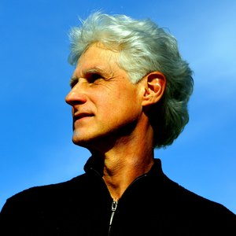

Recordings
Jong Hoon Bae · Conductor

Ian Krouse. Photograph courtesy of UCLA.
Ian Krouse — Symphony No. 5
A Journey Towards Peace
Commissioned by Jong Hoon Bae to mark the seventieth anniversary of the outbreak of the Korean War, Krouse’s fifth symphony sets Walt Whitman alongside the Korean melody Arirang and fragments of Copland and Amazing Grace. The recording made the Seocho Philharmonia the first Korean orchestra to appear on the Naxos label.
Listen — Symphony No. 5
- IOf Youth, Innocence, and Reflection
- IIOf the Apocalypse
- IIIOn the Beach at Night — Michael Dean, bass-baritone
The performances by the Seocho Philharmonia and UCLA Brass Quintet are splendid, and the recording resonant and full.
All you would expect from a top-ranking North American orchestra. Vivid in colours when required, but here also offering a wide range of muted shades.
On video
The complete Haydn symphony cycle was filmed by the Seocho Cultural Foundation. A representative concert from the series, with three symphonies, is available online.
In preparation
A recorded cycle of the complete Haydn symphonies, prepared with historically informed performance scholars at Oxford, is planned for release ahead of the tercentenary of Haydn’s birth in 2032.
A note on credits
Some third-party catalogue entries and streaming services credit the orchestra on this recording incorrectly. The ensemble is the Seocho Philharmonia, as stated in the Naxos catalogue and in the Gramophone review text. Corrections are in progress with the affected databases.